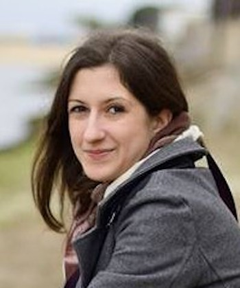
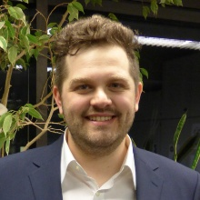
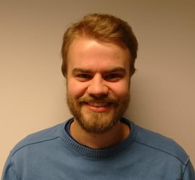
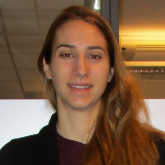

Kent-Andre Mardal, Professor in Mechanics,
Department of Mathematics,
University of Oslo
e-mail: kent-and@math.uio.no,
Adjunct Research Scientist,
Simula Research Laboratory
e-mail: kent-and@simula.no
Consulant for
Expert Analytics
e-mail: kent@xal.no
News 2020
- Nov 2: New book is out
Modeling Excitable Tissue (with Aslak Tveito and Marie Rognes (eds)) at Springer


- Oct 20: Our paper
The myodural bridge of the American alligator (Alligator mississippiensis) alters CSF flow is out in
Journal of Experimental Biology (with Bruce A. Young, James Adams, Jonathan M. Beary, Robert Schneider, Tatyana Kondrashova)
- Sept Yngve Mardal Moe, Alexandra Vallet and Timo Koch started in Alzheimer's physics and the Scienta Fellows
projects


- Sept 21: Our paper Robust preconditioning for coupled Stokes-Darcy problems with the Darcy problem in primal form appeared online in CAMWA (with Karl Erik Holter and Miroslav Kuchta)
- July 27: Our paper Accurate Discretization Of Poroelasticity Without Darcy Stability -- Stokes-Biot Stability Revisited was put on arXiv (with Marie Rognes and Travis Thompson)
- July 10: Our paper An observation on the uniform preconditioners for the mixed Darcy problem was published in Numerical Methods for Partial Differential Equations (with Trygve Bærland, Miroslav Kuchta and Travis Thompson)
-
June 22: Jørgen Dokken defends his thesis Shape Optimization for Finite Element Methods
- June: The paper
Brain-wide glymphatic enhancement and clearance in humans assessed with MRI
from 2018 was rated as a highly cited paper by Web of Science.

- June 19: Our paper The mechanisms behind perivascular fluid flow is put on bioRxiv (with Cecile Daversin-Catty, Vegard Vinje, and Marie E Rognes)
-
June 12: Tormod Landet defends his thesis Discontinuous Galerkin methods for multiphase flow
-
June 8: Our paper Apparent diffusion coefficient estimates based on 24 hours tracer movement support glymphatic transport in human cerebral cortex
appeared in Scientific Reports (with Lars Magnus Valnes, Sebastian K. Mitusch, Geir Ringstad, Per Kristian Eide and Simon W. Funke)
-
May 12: Our paper Dynamics of a neuron-glia system: the occurrence of seizures and the influence of electroconvulsive stimuli appeared online in Journal of Computational Neuroscience (with Andre H. Erhardt and Jakob E. Schreiner)
-
April 17: Our paper Intracranial pressure elevation alters CSF clearance pathways appeared in Fluids and Barriers of the CNS (with Vegard Vinje, Anders Eklund, Marie Rognes, and Karen Støverud)
-
April 7: Our paper Analysis and approximation of mixed-dimensional PDEs on 3D-1D domains coupled with Lagrange multipliers is put on arXiv (with Miroslav Kuchta, Federica Laurino, and Paolo Zunino)
-
March 24: Our paper Parameter robust preconditioning for multi-compartmental Darcy equations
is put on arXiv (with Eleonora Piersanti, Marie E. Rognes)
-
March 24: Our paper Parameter robust preconditioning by congruence for multiple-network poroelasticity is put on arXiv (with Eleonora Piersanti, Jeonghun J. Lee, Travis Thompson, Marie E. Rognes
-
Bastian Zapf, Martin Hornkjøl and Ana Budisa started in
the SciML project


- January 17: Our paper Robust preconditioning of monolithically coupled multiphysics problems is put on arXiv (with Karl Erik Holter and Miroslav Kuchta)
- January 17: Lars Magnus Valnes defends his thesis Patient-specific Modeling of the Human Brain using Magnetic Resonance Imaging.
News 2019
- November 5: Our paper Can diffusion alone explain brain-wide distribution of a CSF tracer within 24 hours? appeared on arXiv (with Lars Magnus Valnes, Sebastian K. Mitusch, Geir Ringstad, Per Kristian Eide, Simon W. Funke)
- October 17: Our paper
Slope limiting the velocity field in a discontinuous Galerkin divergence free two-phase flow solver, (with Tormod Landet and Mikael Mortensen) appared online in Computers and Fluids.
- October 17:
New book
Introduction to Numerical Methods for Variational Problems (Texts in Computational Science and Engineering, Springer) available at Springer and Amazon
with late Hans Petter Langtangen.

- September 20: Vegard Vinje
defends his PhD thesis his PhD thesis
Mathematical Modeling of Cerebrospinal Fluid Pulsatility and Pathways
- September 9: Our paper Intracranial pressure elevation alters CSF clearance pathways appeared on bioRxiv (with Vegard Vinje, Anders Eklund, Marie Rognes and Karen Støverud)
- September 8: Our paper Delayed clearance of cerebrospinal fluid tracer from choroid plexus in idiopathic normal pressure hydrocephalus appeared online in Journal of Cerebral Blood Flow and Metabolism (with Per Kristian Eide, Lars Magnus Valnes, Are Hugo Pripp and Geir Ringstad)
- July 5: Our paper Respiratory influence on cerebrospinal fluid flow a computational study based on long-term intracranial pressure measurements appeared online in Scientific Reports (with Vegard Vinje, Geir Ringstad, Erika Lindstrøm, Lars Magnus Valnes, Marie E Rognes, Per Kristian Eide)
Vegard has been interviewed by Forskning.no:
And also NRK and P1 .
- June 13: Our paper Laplacian Preconditioning of Elliptic PDEs: Localization of the Eigenvalues of the Discretized Operator appeared online in SINUM (with Tomas Gergelits, Bjørn Fredrik Nielsen, and Zdenek Strakos)
- May 28: Our paper Multi-resolution Bayesian CMB component separation through Wiener filtering with a pseudo-inverse preconditioner appeared online in Astronomy & Astrophysics (with Dag Sverre Seljebotn, Trygve Bærland, Hans Kristian Eriksen and Ingunn Kathrine Wehus)
- April 26: Trygve Bærland defends his PhD thesis Preconditioning strategies related to multiphysics problems .
- April 2: Our paper Multigrid Methods for Discrete Fractional Sobolev Spaces (with Trygve Bærland and Miroslav Kuchta) appeared online in SISC .
- March 19: Our paper A mixed finite element method for nearly incompressible multiple-network poroelasticity, (with Jeonghun J. Lee, Eleonora Piersanti, and Marie E. Rognes) appeared online in SISC .
- March/Feb: The paper Preconditioning discretizations of systems of partial differential equations from 2011 (with Ragnar Winther) was rated as a highly cited paper by Web of Science.

- Feb 26: Our paper How does the presence of neural probes affect extracellular potentials? (with Alessio Buccino, Miroslav Kuchta, Karoline Jaeger, Torbjorn Ness, Pierre Berthet, Gert Cauwenberghs, Aslak Tveito) appeared online in Journal of Neural Engineering.
- Jan 5: Our paper Sub-voxel perfusion modeling in terms of coupled 3d-1d problem, (with Karl Erik Holter and Miroslav Kuchta) for the ENUMATH 2017 Proceeding appared online.
News 2018
- December 11: Letter to the editor "Bucket" cerebrospinal fluid bulk flow: when the terrain disagrees with the map appeared in Acta Neurochirurgica (with Per Kristian Eide, Anglika Sorteberg, Wilhelm Sorteberg, Erika Lindstrøm, and Geir Ringstad)
- December 4: Our paper Uniform Preconditioners For The Mixed Darcy Problem is put on arXiv (with Trygve Bærland, Miroslav Kuchta and Travis Thompson)
- November 17: Our paper Magnitude and direction of aqueductal cerebrospinal fluid flow: large variations in patients with intracranial aneurysms with or without a previous subarachnoid hemorrhage appeared online in Acta Neurochirurgica (with Erika Lindstrøm, Geir Ringstad and Per Kristian Eide)
- September 19: Our paper Cerebrospinal fluid volumetric net flow rate and direction in idiopathic normal pressure hydrocephalus appeared online in NeuroImage: Clinical (with Erika Lindstrøm, Geir Ringstad, Per Kristian Eide)
- September 17: Our paper Preconditioning trace coupled 3d-1d systems using fractional Laplacian appeared online in Numerical Methods for Partial Differential Equations (with Miroslav Kuchta, Mikael Mortensen)
- September 15: Our paper Variational data assimilation for transient blood flow simulations --Cerebral aneurysms as an illustrative example appeared online in International Journal for Numerical Methods in Biomedical Engineering (with Simon Funke, Magne Nordaas, Øvind Evju, Martin Alnæs)
- September 14: Collaborating neuroradiologist Geir Andre Ringstad is defending his PhD thesis Imaging cerebrospinal fluid dynamics in idiopathic normal pressure hydrocephalus.
- September 12: Our paper Laplacian preconditioning of elliptic PDEs: Localization of the
eigenvalues of the discretized operator appeared on arXiv (with Tomas Gergelits, Bjørn Fredrik
Nielsen and Zdenek Strakos) .
- September 12: Benchmark Real-World Variability in the Prediction of Intracranial Aneurysm WallShear Stress: The 2015 International Aneurysm CFD Challenge appeared in Cardiovascular Engineering and Technolog.
- August 20: Our paper On the singular Neumann problem in linear elasticity (with Miroslav Kuchta and Mikael Mortensen) appeared online in Numerical Linear Algebra with Applications.
- August 17: Our paper Fluid dynamics in syringomyelia cavities: Effects of heart rate, CSF velocity, CSF velocity waveform and craniovertebral decompression (with Vegard Vinje, Justin Brucker, Marie Rognes and Victor Haughton) appeared in the Neuroradiology journal.
- August 10: First complete draft of the book about finite element methods called Introduction to Numerical Methods for Variational Problems (with late Hans Petter Langtangen)
- July 12: Our paper Brain-wide glymphatic enhancement and clearance in humans assessed with MRI (with Geir Ringstad, Lars M. Valnes, Anders M. Dale, Are H. Pripp, Svein-Are S. Vatnehol, Kyrre E. Emblem, and Per K. Eide) appeared online in Journal of Clinical Investigation Insight. We even made the cover.
Also Norway's best-selling newspaper  reported on our findings here
reported on our findings here
- Feb 21: Our paper
Comparison of phase-contrast MR and flow simulations for the study of CSF dynamics in the cervical spine, (with Erika Kristina Lindstrøm, Jakob Schreiner, Geir Andre Ringstad, Victor Haughton, Per Kristian Eide) appeared online in the Neuroradiology journal.
- Feb 2: Collaborator at astrophysics, Dag Sverre Seljebotn, defends his thesis
Computational techniques for efficient Bayesian analysis of the Cosmic Microwave Background
News 2017
- Des 15: Collaborating neurosurgeon Radek Fric defends his PhD-thesis The pathophysiology of Chiari malformation Type I with respect to the static and pulsatile intracranial pressure"
- Nov 30: Our paper Non-invasive assessment of pulsatile intracranial pressure with phase-contrast magnetic resonance imaging, (with
Geir Ringstad, Erika Kristina Lindstrøm, Svein Are Sirirud Vatnehol, Kyrre Eeg Emblem, Per Kristian Eide) appeared online in Plos One.
- Nov 9: Our paper Numerical study of intrathecal drug delivery to a permeable spinal cord: effect of catheter position and angle, (with Giulia Pizzichelli, Benjamin Kehlet, Øvind Evju, Marie Rognes, and Edoardo Sinibaldi) appeared online in Computer Methods in Biomechanics and Biomedical Engineering.
- Oct 3: Our paper Multi-resolution Bayesian CMB component separation through Wiener-filtering with a pseudo-inverse preconditioner , (with Dag Sverre Seljebotn, Trygve Bærland, Hans Kristian Eriksen, and Ingunn Wehus) was submitted to arXiv.
- Oct 3: Our paper A cell-based framework for numerical modeling of electrical conduction in cardiac tissue, (with Aslak Tveito, Karoline Jæger, Miroslav Kuchta, and Marie Rognes) appeared in Frontier, computational physics.
- Aug 28: Our paper Interstitial solute transport in 3D reconstructed neuropil occurs by diffusion rather than bulk flow, (with
Karl Erik Holter, Benjamin Kehlet, Anna Devor, Terrence J. Sejnowski,
Anders M. Dale, Stig W. Omholt, Ole Petter Ottersen, Erlend Arnulf Nagelhus,
and Klas H. Pettersen) appeared in PNAS.
- Aug 1: Jakob Schreiner started as a PhD-student concerning the modeling of electroconvulsive therapy against major depression (joint project with co-supervisors Aslak Tveito, Leif Oltedal and Ola Skavhaug at XAL).
- June 17: Our paper "Weakly Imposed Symmetry and Robust Preconditioners for Biot's Consolidation Model" , (with Trygve Bærland, Jeonghun J. Lee, Ragnar Winther)
appeared in CMAM.
- June 13: Our paper "Robustness of common hemodynamic indicators with respect to numerical resolution in 38 middle cerebral artery aneurysms" , (with Øvind Evju, Jose M. Pozo,
Alejandro F. Frangi) appeared in Plos One.
- June 1: Our paper
"Robust preconditioners for PDE-constrained optimization with limited observations" ,
(with Magne Nordaas and Bjørn Fredrik Nielsen) appeared
in BIT.
- May 19: Magne Noraas defended his PhD-thesis - "Operator preconditioning for PDE-constrained optimisation and multiscale problems".
- March 17: Miroslav Kuchta defended his PhD-thesis - "Preconditioners for singular problems and coupled problems with domains of different dimensionality".
- March 15: Our paper
"A numerical investigation of intrathecal isobaric drug dispersion within the cervical subarachnoid space", (with
Per Thomas Haga, Giulia Pizzichelli, Mikael Mortensen, Miroslav Kuchta, Soroush H. Pahlavian, Edoardo Sinibaldi,
Bryn A. Martin) appeared in Plos One.
- Jan 13: Øvind Evju defended his PhD-thesis - "Computational hemodynamics in cerebral aneurysms: Robustness of rupture risk indicators under different model assumptions."
- Jan 13: Our paper
Direct numerical simulation of transitional hydrodynamics of the cerebrospinal fluid in Chiari I malformation: The role of cranio-vertebral junction , (with Kartik Jain, Geir Ringstad, and Per Kristian Eide) appeared in International Journal for Numerical Methods in Biomedical Engineering.
- Jan 3: Our paper
"Parameter-Robust Discretization and Preconditioning of Biot's Consolidation Model", (with Jeonghun J. Lee and Ragnar Winther) appeared in SISC.